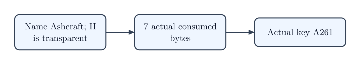
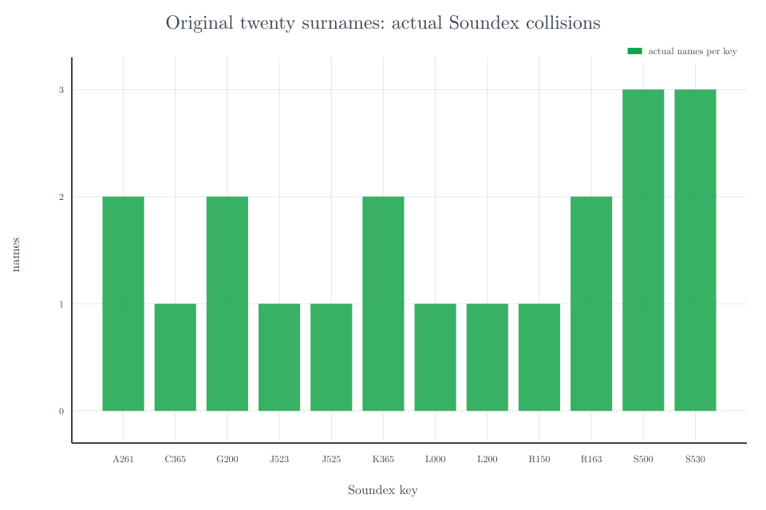
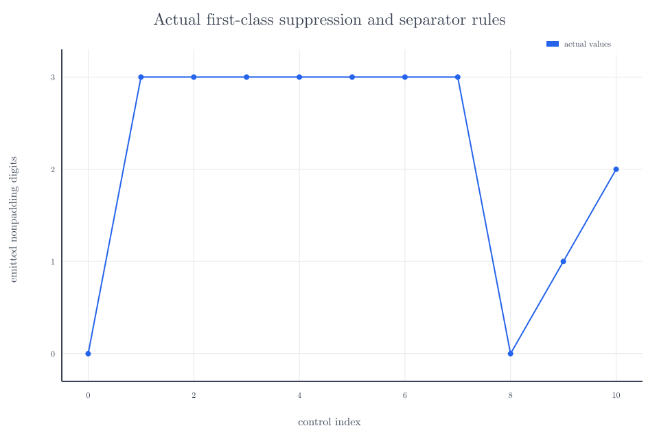
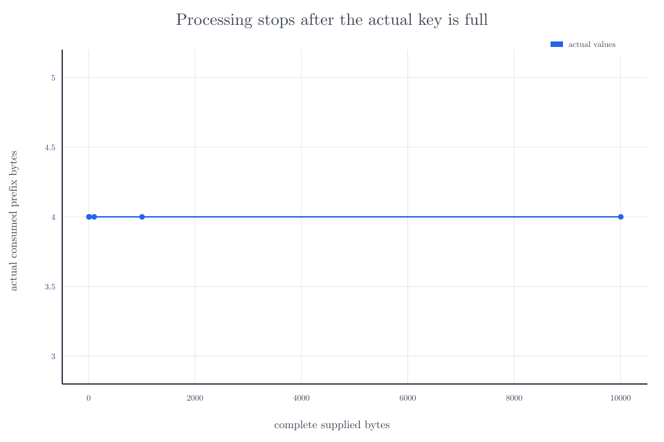

Soundex: actual consonant classes and deliberate collisions
Abstract
A name index should retrieve some spelling variants under a common coarse key. American Soundex retains the first letter and encodes later consonant classes into three digits, deliberately losing distinctions. We trace actual branches, retain the original twenty surnames, and separate transparent H/W from vowel resets.
Mechanism and mathematical scope
Map BFPV to1, CGJKQSXZ to2, DT to3, L to4, MN to5 and R to6. Retain the first uppercase byte and initialize the previous class from it. Emit a consonant class only when it differs from the previous class. Vowels/Y reset the previous class, while H/W leave it unchanged. Stop at three digits and pad with zeros.
For Ashcraft, S and C share class2 and H is transparent, so the C is suppressed. A vowel between equal classes instead permits both. The trace contains the actual consumed prefix, each class decision and the final padding step. A suffix after the key is full is not processed, although the complete byte policy still checks it.
The map is intentionally many-to-one. Equal keys can help candidate retrieval but do not prove equal pronunciation or identity, and different keys can miss plausible variants. Initial letters are retained, so Catherine and Katherine do not collide despite sounding alike in some accents. There is no universal guarantee of catching all spelling variants.
A tiny actual producing history
The table and native concept diagram read the same producing execution. Every block below is a complete editable C++ program.
#include <dm/dm.hpp>
int main() {
namespace a = dm::algorithms;
namespace g = dm::graphics;
std::filesystem::create_directories("build");
auto r = a::soundex_trace("Ashcraft");
std::print("| actual offset | uppercase | class | previous | actual branch | actual partial key |\n| " "---: | --- | --- | --- | --- | --- |\n");
for (const auto &s : r.history)
std::print("| {} | {} | {} | {} | {} | `{}` |\n", s.offset,
s.action == "pad" ? "(pad)" : std::string(1, s.uppercase),
s.group, s.previous, s.action, s.partial);
g::Diagram concept_diagram(48, 1100);
concept_diagram.node("n0", {0, 0}, "Name Ashcraft; H is transparent");
concept_diagram.node("n1", {5, 0},
std::format("{} actual consumed bytes", r.scanned_bytes));
concept_diagram.node("n2", {10, 0}, std::format("Actual key {}", r.code));
concept_diagram.edge("n0", "n1").edge("n1", "n2");
concept_diagram.save_svg("build/soundex_tiny.svg");
}| actual offset | uppercase | class | previous | actual branch | actual partial key |
|---|---|---|---|---|---|
| 0 | A | 0 | 0 | retain-first | A |
| 1 | S | 2 | 0 | append | A2 |
| 2 | H | 0 | 2 | transparent | A2 |
| 3 | C | 2 | 2 | suppress | A2 |
| 4 | R | 6 | 2 | append | A26 |
| 5 | A | 0 | 6 | reset | A26 |
| 6 | F | 1 | 0 | append | A261 |
| 7 | (pad) | 0 | 1 | pad | A261 |

The retained original experiment
#include <dm/dm.hpp>
int main() {
namespace a = dm::algorithms;
namespace g = dm::graphics;
std::filesystem::create_directories("build");
auto groups = a::soundex_groups(a::soundex_example_names());
std::vector<std::string> labels;
std::vector<double> heights;
std::print("| actual original key | original names in input order | count |\n| --- | --- | ---: |\n");
for (const auto & [key, names] : groups) {
std::print("| {} | `{}` | {} |\n", key, names, names.size());
labels.push_back(key);
heights.push_back(names.size());
}
auto plot =
g::RPlot::barplot(heights, labels, "actual names per key", {22, 163, 74});
plot.title("Original twenty surnames: actual Soundex collisions").x_label(
"Soundex key").y_label("names");
plot.save_svg("build/soundex_original.svg");
}| actual original key | original names in input order | count |
|---|---|---|
| A261 | ["Ashcraft", "Ashcroft"] | 2 |
| C365 | ["Catherine"] | 1 |
| G200 | ["Gauss", "Gaus"] | 2 |
| J523 | ["Johnston"] | 1 |
| J525 | ["Johnson"] | 1 |
| K365 | ["Katherine", "Kathryn"] | 2 |
| L000 | ["Lee"] | 1 |
| L200 | ["Leigh"] | 1 |
| R150 | ["Rubin"] | 1 |
| R163 | ["Robert", "Rupert"] | 2 |
| S500 | ["Sean", "Shawn", "Shaun"] | 3 |
| S530 | ["Smith", "Smyth", "Smythe"] | 3 |

Explicit controls
#include <dm/dm.hpp>
int main() {
namespace a = dm::algorithms;
namespace g = dm::graphics;
std::filesystem::create_directories("build");
const std::vector<std::string> names{"", "Robert", "Rupert", "Pfister",
"Ashcraft", "Ashcroft", "Tymczak",
"Honeyman", "BHB", "BAB", "123Bob"};
std::vector<double> x, y;
std::print("| control | actual key | scanned bytes | emitted digits | padding |\n| --- | --- | ---: | " "---: | ---: |\n");
for (std::size_t i = 0; i < names.size(); ++i) {
auto r = a::soundex_run(names[i]);
std::print("| `{}` | `{}` | {} | {} | {} |\n",
names[i].empty() ? "(empty)" : names[i],
r.code.empty() ? "(empty)" : r.code, r.scanned_bytes,
r.emitted_digits, r.padding);
x.push_back(i);
y.push_back(r.emitted_digits);
}
auto plot = g::RPlot::create();
plot.lines(x, y, "actual values", {37, 99, 235}).points(x, y, {37, 99, 235},
4).title(
"Actual first-class suppression and separator rules").x_label(
"control index").y_label("emitted nonpadding digits");
plot.save_svg("build/soundex_controls.svg");
}| control | actual key | scanned bytes | emitted digits | padding |
|---|---|---|---|---|
(empty) | (empty) | 0 | 0 | 0 |
Robert | R163 | 6 | 3 | 0 |
Rupert | R163 | 6 | 3 | 0 |
Pfister | P236 | 7 | 3 | 0 |
Ashcraft | A261 | 7 | 3 | 0 |
Ashcroft | A261 | 7 | 3 | 0 |
Tymczak | T522 | 7 | 3 | 0 |
Honeyman | H555 | 8 | 3 | 0 |
BHB | B000 | 3 | 0 | 3 |
BAB | B100 | 3 | 1 | 2 |
123Bob | 1110 | 6 | 2 | 1 |

Actual selected work and sensitivity
#include <dm/dm.hpp>
int main() {
namespace a = dm::algorithms;
namespace g = dm::graphics;
std::filesystem::create_directories("build");
std::vector<double> x, y;
std::print("| complete input bytes | actual consumed prefix bytes | actual key |\n| ---: | ---: | --- " "|\n");
for (std::size_t n : {0, 10, 100, 1000, 10000}) {
const std::string name = "BRTMN" + std::string(n, 'a');
auto r = a::soundex_run(name);
std::print("| {} | {} | {} |\n", name.size(), r.scanned_bytes, r.code);
x.push_back(name.size());
y.push_back(r.scanned_bytes);
}
auto plot = g::RPlot::create();
plot.lines(x, y, "actual values", {37, 99, 235}).points(x, y, {37, 99, 235},
4).title(
"Processing stops after the actual key is full").x_label(
"complete supplied bytes").y_label("actual consumed prefix bytes");
plot.save_svg("build/soundex_work.svg");
}| complete input bytes | actual consumed prefix bytes | actual key |
|---|---|---|
| 5 | 4 | B635 |
| 15 | 4 | B635 |
| 105 | 4 | B635 |
| 1005 | 4 | B635 |
| 10005 | 4 | B635 |

API and interpretation
ASCII names are case-insensitive and locale-independent. No letter filtering is performed: legacy punctuation/digit behavior retains the first byte and treats later uncoded bytes as resets. Non-ASCII bytes are preserved rather than transliterated; the linguistic rules are specified only for ASCII names. The old report mentioned a4000-word jellyfish check without retaining its corpus or receipt; it is not asserted as fresh evidence here. The original twenty-name cohort remains fully reproducible.
Reusable producers, fixtures and histories live in the canonical C++ library. Captured records own their values and do not come from a separate report replay. Selected counters and record/scalar policies are specified at their API boundaries; they are not peak-byte or wall-time budgets. Synthetic structural inputs are controlled fixtures for these mechanisms.
References
Verified in the shared ten-document batch: 67 scoped native cases and9 formatter
cases;20 directly instrumented ASan/UBSan cases;87 executable public
examples;402/402 full-file definitions across29 scopes;10 hovers;10569
independent records/108541 checks;frozen comparisons across all ten families
with density-rank, long-prefix arithmetic, initial residual and complete-input
corrections recorded;15 checkout/installed standalone headers and linked
ten-family consumer;40 executed programs and40 inspected figures with both
exports. Receipts: build/mepml-conversion/batch-364-373/.